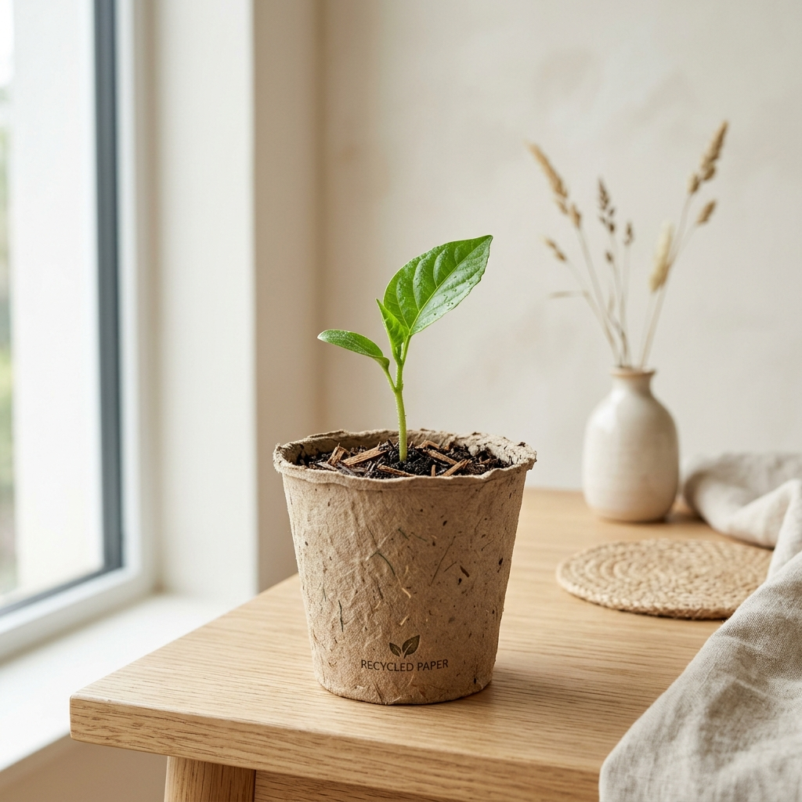
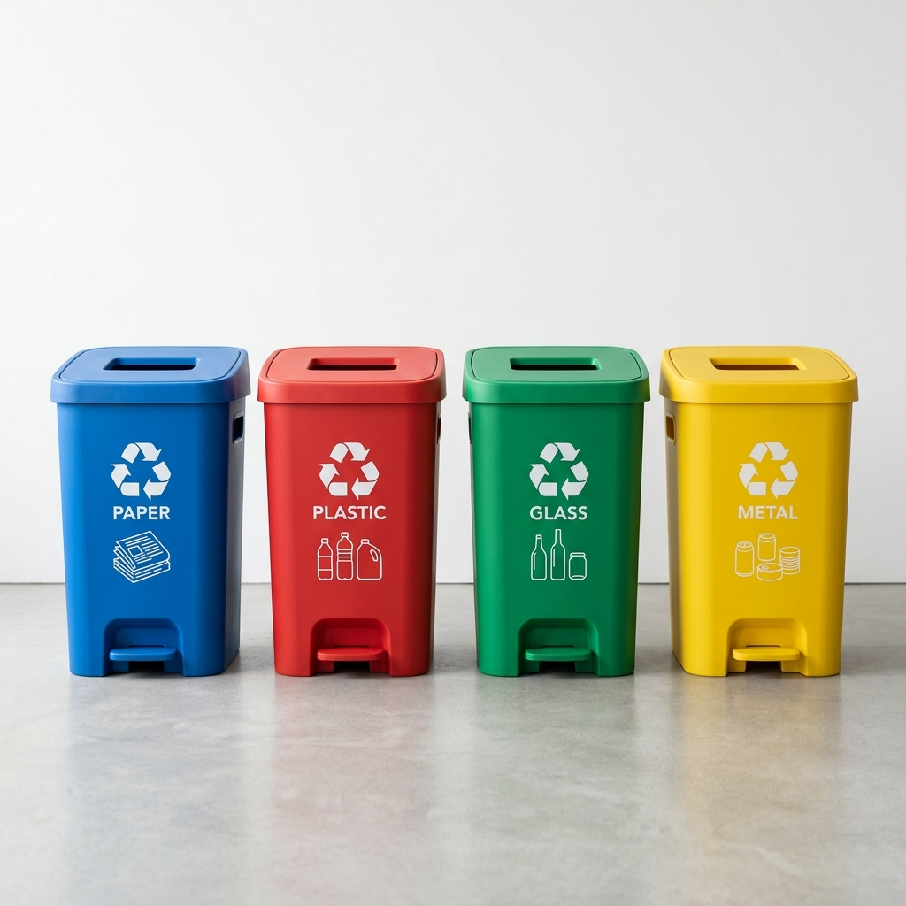
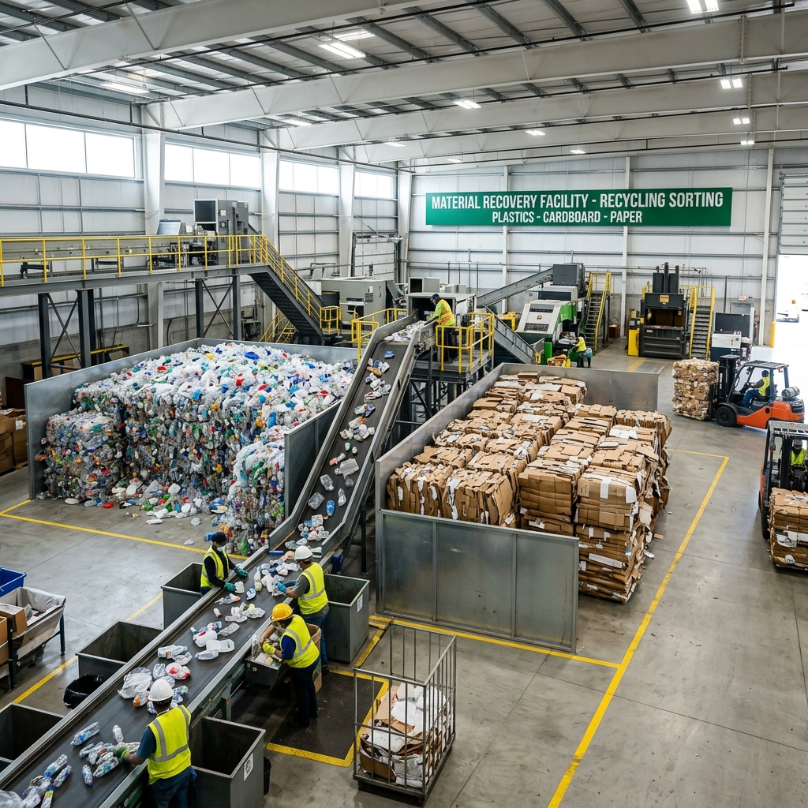
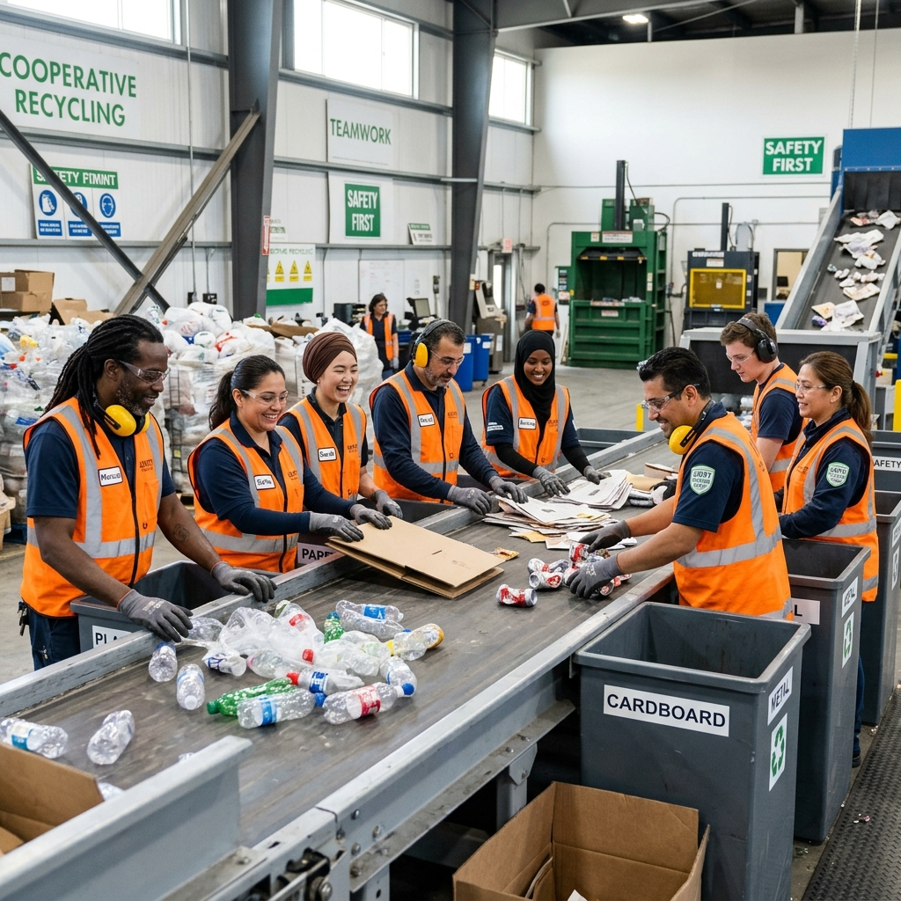

Reciclar é cultivar o nosso amanhã.
Transformar resíduos em novos recursos reduz impactos ambientais, preserva a natureza e fortalece a economia circular para uma sociedade mais justa.

Por que a reciclagem importa?
A reciclagem é o processo de reaproveitamento de materiais que seriam descartados, reinserindo-os no ciclo produtivo. É o pilar fundamental da economia circular.
Preservação Natural
Reduz a necessidade de extrair novas matérias-primas da natureza, protegendo florestas e oceanos.
Redução de Lixo
Diminui drasticamente o volume de resíduos em aterros e elimina a necessidade de lixões irregulares.
Geração de Renda
Movimenta bilhões na economia e garante o sustento de milhares de famílias em todo o Brasil.
Economia de Energia
Processar material reciclado consome até 95% menos energia do que produzir a partir do zero.
Como você pode ajudar?
Pequenas mudanças no seu dia a dia fazem uma diferença gigante. A separação correta é o primeiro passo para que o material chegue ao seu destino final.
Limpe as embalagens
Retire restos de comida e líquidos. Uma embalagem suja pode contaminar todo um lote de materiais recicláveis.
Separe o orgânico
Mantenha restos de comida, papéis engordurados e lixo de banheiro longe dos materiais secos.
Conheça as cores
Azul (Papel), Vermelho (Plástico), Verde (Vidro) e Amarelo (Metal) são os seus maiores aliados.

Os Verdadeiros Agentes do Planeta
Você sabia que os catadores são responsáveis por cerca de 90% de todo o material que é efetivamente reciclado no Brasil? Eles são a base da economia circular, suprindo a carência de coleta seletiva em mais de 1.400 municípios.
90%
Da reciclagem nacional depende deles
800k
Trabalhadores em todo o país


Cooperativismo e Dignidade
A organização em cooperativas e associações, muitas vezes lideradas pelo MNCR (Movimento Nacional dos Catadores), transforma a vida desses profissionais, garantindo:
Segurança e Saúde
Uso de EPIs, maquinário adequado para triagem e ambientes de trabalho controlados.
Remuneração Justa
Eliminação de atravessadores, permitindo que o valor do material chegue direto a quem coletou.
Inclusão e Respeito
O catador deixa de ser invisível para se tornar um cidadão respeitado e um educador ambiental em sua comunidade.
"Sem catador não há reciclagem. Somos a mão que cuida do futuro do Brasil."
EPIs para os Catadores
Equipamentos de Proteção Individual essenciais para a segurança e saúde no trabalho.
Luvas de proteção
Protegem contra cortes, perfurações e contato com materiais contaminados.
Botas de segurança
Evitam acidentes com objetos perfurantes e contato com resíduos líquidos.
Máscara de proteção
Reduz a inalação de poeira, odores fortes e agentes contaminantes.
Óculos de proteção
Protegem os olhos contra partículas, poeira e respingos.
Uniforme resistente
Ajuda a proteger a pele e a roupa contra sujeira e possíveis contaminações.
Protetor solar
Fundamental para quem trabalha exposto ao sol por longos períodos.
Chapéu ou boné
Auxilia na proteção contra o sol e o calor.
Impacto Real no Brasil
Dados atualizados sobre o cenário da gestão de resíduos.
81M
Toneladas de resíduos gerados por ano
8.7%
Total de resíduos efetivamente reciclados
800k
Catadores em atividade no país
97%
Das latas de alumínio são recicladas
Idealizadores do Projeto
O Rotaciclo Sustentável é uma iniciativa do Rotaract Club de João Pinheiro que nasce do compromisso com a educação ambiental e a transformação social. O projeto busca incentivar práticas sustentáveis por meio da conscientização sobre a importância da reciclagem, do consumo responsável e do descarte correto de resíduos.
Idealização
Rotaract Clube de João Pinheiro
Distrito 4760

Direção Técnica
Biol. Rafael Alves Franco
Diretor Interino de Meio Ambiente
Reciclar é um compromisso de todos.
O futuro do planeta depende das escolhas que fazemos hoje. Comece separando seu lixo e valorizando quem trabalha por um mundo mais limpo.
Faça sua parte hoje